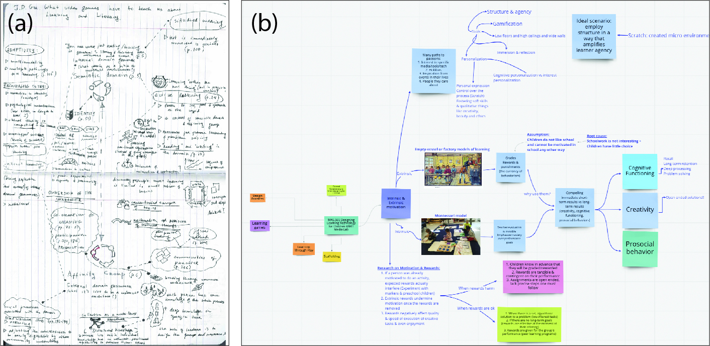

Our class is partially reading-based, partially project-based. Correspondingly, it is composed of two types of sessions: theoretical ones and design studios.
In our classes, we sought to help students build such networks of knowledge. This can be seen in the format of reading discussions we developed for the Designing Learning Technologies for Children class. Each reading had a student who was responsible for it, and that student prepared a “map” of the reading before class (Fig. 1b; shared with permission). Each map distilled the key ideas within the reading, their connections to each other and to other papers, and finally, the connections between the material and the presenter’s own experience . We encouraged usage of visuals within the maps, to help students activate their visual memory. The idea of the map was inspired by my experience of creating similar diagrams during preparation to my PhD exams (Fig. 1a). I found that practice very helpful in remembering the content of the materials long after the exams, and I expect that the effect will be similar for our students. According to the students' feedback, the “mind maps” were well-liked and appeared as one of the favorite features of the class.

Mind map credit: Victoria Klimova
In the design studios, we discussed the students' ongoing work on their class projects, provided them with feedback and suggestions, connected their practice with theory, and suggested additional relevant readings and materials. The projects that the students chose to work on are either wireframes, or low-fidelity prototypes. We encouraged students to pick topics which are closely connected to their interests, and a range of fascinating projects emerged, dealing with sustainability, design thinking, music, Blockchain and preserving traditional languages.
Here is an example of how design studios reinfornced the connection between the theory and practice. Two students in the class worked on introducing of sustainability and design thinking concepts through a game about cooking. After reviewing their original ideas, we reminded the students that in a recent theoretical discussion, a guest speaker mentioned an idea from the field of game design: "a game is a sequence of interesting choices". In the next iteration of their design, the students proposed that the player should act as a chef who needs to serve customers with different preferences (one wants to have very nutritious food, another wants to have meal that is better for the planet, and so on). To simultaneously satisfy all the customers, the chef will have to make interesting tradeoffs, all the while learning about different issues associated with food, its production, consumption, and disposal of waste. They applied the theoretical concept to their own game, and it is likely that this application is going to help the students to remember the concept much better.
One thing that we strived to encourage in the class is high degree of student agency. We provided a lot of flexibility in terms of project options, so that students can choose something that fits their goals and interests well. We asked their feedback on certain decisions regarding the organization of the class. We also strived to maintain an atmosphere that would encourage conversations and sharing (partially by setting an example ourselves), rather than the conventional "lecturer-listener" dynamics. Students appreciated these efforts, and in the survey, one of them commented that they particularly liked "the free nature of the class".